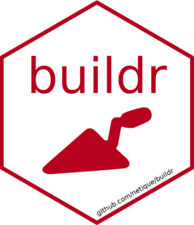

Changelog
Source:NEWS.md
buildr 0.1.0
CRAN release: 2021-01-10
complete reboot, a whole new philosophy built around automatically generated, fully editable
Makefileand prioritization of its “rules”-
“trinity” of essential functions introduced:
-
init()initializes aMakefilein project root with automatically discovered build scripts -
aim()sets one of theMakefiletargets to be recognized by RStudio’s Build pane (prioritization) -
build()builds the firstMakefileentry (set by user or viaaim())
Technicals
-
pkgdownis used to build package website, so you can read the news, vignettes and full documentation in a more pleasant, responsive way even outsideRpartly covered with
testthattests